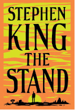

The Books You've Been Meaning to Read


Some Fictional Bestsellers You Don’t Want to Miss!
Crack open one of these best-selling books and see what everyone’s talking about.
This list of bestsellers was gathered from our research on various bestseller lists including the New York Times Best Seller list
*These bestsellers are not ranked in any particular order and this list gets updated weekly
The Da Vinci Code
by: Dan Brown
The Da Vinci Code is a mystery thriller novel. This story begins with a murder in the Louvre Museum in Paris, then causes "symbologist" Robert Langdon and cryptologist Sophie Neveu’s involvement in a battle between the Priory of Sion an extremely powerful secret society and Opus Dei a religious sect over the possibility of Jesus Christ and Mary Magdalene having had a child together.
Click Here To PurchaseHarry Potter Series
by: J. K. Rowling
Harry Potter is a series of seven fantasy novels. The novels follow the lives of Harry Potter, and his friends Hermione Granger and Ron Weasley. These novels follow Harry in his struggle against Lord Voldemort, a dark wizard who aims to become immortal, overthrow Ministry of Magic the wizarding governing body, and gain control of all wizards and Muggles (non-magical people).
Click Here To PurchasePride and Prejudice
by: Jane Austen
Pride and Prejudice is a romantic novel of manners. The story follows the development of Elizabeth Bennet, as she deals with issues of manners, education, marriage, and morality during the British Regency Era. Throughout the novel, she learns about the consequences of hasty decisions, and comes to value the difference between superficial goodness and actual goodness.
Click Here To PurchaseThe Hobbit and The Lord of the Rings Series
by: J. R. R. Tolkien
The Hobbit and The Lord of the Rings is series of four fantasy novels. The Hobbit follows Bilbo Baggins as he finds himself on a journey with Gandalf and a company of dwarves to raid the treasure guarded by Smaug the Magnificent, a large and dangerous dragon. The Lord of the Rings centers on Frodo Baggins who found one ring made by the Dark Lord Sauron. This series follows Frodo Baggins and the Fellowship of the Ring as they undertake a great quest to destroy the ring at Mount Doom.
Click Here To PurchaseThe Stand
by: Stephen King

The Stand is a post-apocalyptic dark fantasy novel. The story centers on a pandemic caused by a very deadly virus called “Captain Trips”. “Captain Trips” is a weaponized strain of influenza that was accidentally released from government facilities killing 99.4% of the world’s population. The remaining survivors, struggle to rebuild civilization in the aftermath of the pandemic and they unite into two factions, establish a new social system and prepare for the final stand between good and evil.
Click Here To PurchaseDeadly Cross
by: James Patterson
Deadly Cross part of the Alex Cross crime, mystery and thriller novel series. This novel centers around Detective Alex Cross and FBI Special Agent Ned Mahoney’s investigation of a double homicide involving the vice president's ex-wife Kay Willingham, a glamourous Georgetown socialite. Detective Alex Cross and FBI Special Agent Ned Mahoney travel to Alabama to investigate Kays early where they find a world of trouble, corruption, and secrets.
Click Here To PurchaseThe Return
by: Nicholas Sparks
The Return is a moving romance novel that follows Trevor Benson an injured Navy doctor moves back to New Bern, North Carolina and sets out on a quest to reveal two women’s secrets that will change the course of his life. During this quest he learns the true meaning of love and forgiveness, and that to move forward in life one often has to return to the place where everything began.
Click Here To PurchaseThe Lion, the Witch and the Wardrobe
by: C. S. Lewis
The Lion, the Witch and the Wardrobe is a fantasy novel that follows four children who were relocated to a large, old country house following a wartime evacuation. They eventually find themselves in a faraway land called Narnia, a land of talking animals, an evil white witch who rules the land, and a fearsome lion named Aslan. The children travel to Narnia through a wardrobe where they fulfill an old prophecy to save Narnia.
Click Here To PurchaseThe Golden Compass
by: Philip Pullman
The Golden Compass is a fantasy novel, that is set in a world where humans have animal familiars and where parallel universes are in reach. The novel follows Lyra Belacqua on her journey to the Arctic to find her missing friend Roger Parslow, and Lord Asriel, her imprisoned uncle who has been experimenting with a mysterious substance called “Dust” in an attempt to build a bridge to a parallel world.
Click Here To Purchase